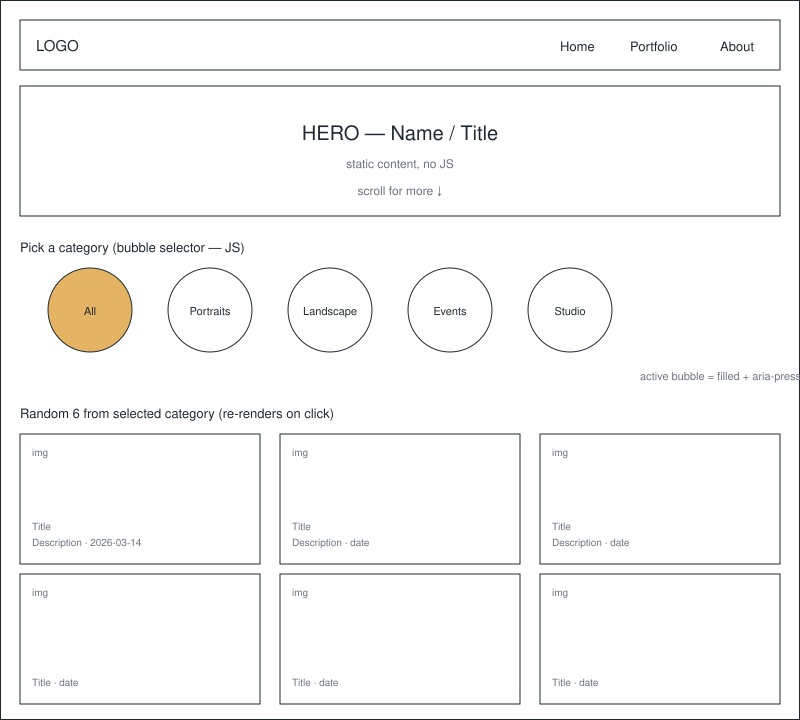
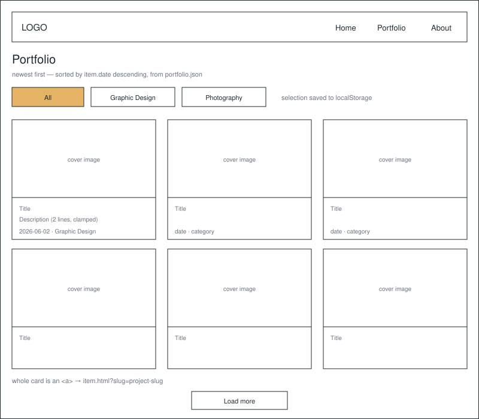
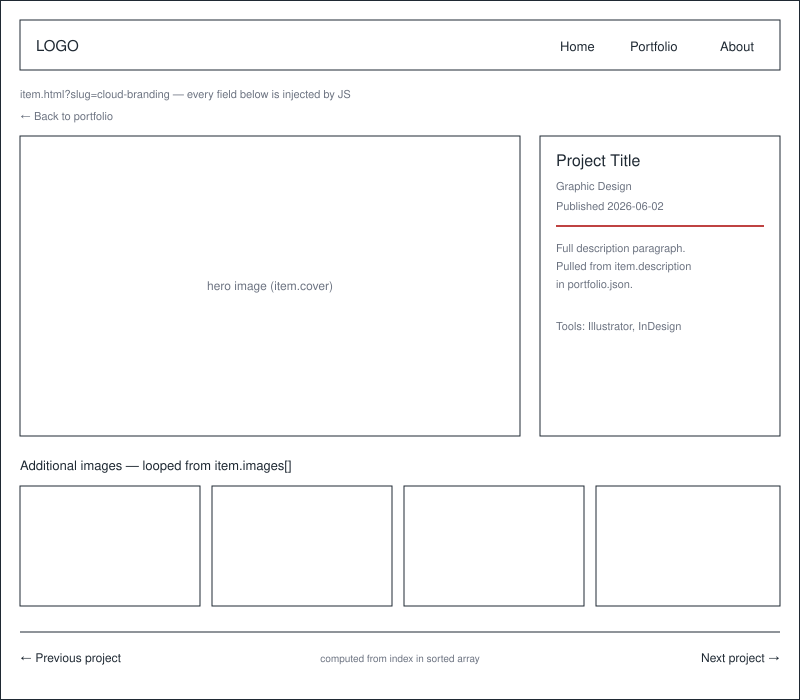

This site rebuilds an existing static design-and-photography portfolio as a data-driven web app, so that adding new work means dropping files in a folder and updating one JSON manifest instead of hand-editing HTML. The home page invites visitors to explore photography through a bubble category selector that pulls a fresh random sample on every click, and the portfolio page always surfaces the newest work first. Each graphic design project opens into its own detail page rendered from a single reusable template.
The primary audience is hiring managers, creative directors, and small-business owners in southeastern Idaho who are evaluating a designer before reaching out. They arrive from a résumé link, Instagram, or LinkedIn, spend under two minutes, and want to see range quickly and confirm the work is current. A secondary audience is the site owner, who needs to publish new work in minutes without touching markup.
JavaScript drives every image on the site. Nothing in the galleries is hardcoded in HTML.
1. Bubble category selector (home page). Category bubbles are generated at runtime from the unique
category values found in photos.json, so a new category appears automatically once one
photo uses it. Clicking a bubble filters the photo array, shuffles the matches with a Fisher–Yates shuffle, takes
the first six, and re-renders the gallery. Because the sample is random, a visitor who clicks the same bubble twice
sees a different set. Each card renders the photo's title, description, and formatted date.
2. Newest-first portfolio grid. portfolio.json is fetched, sorted by
date descending, and rendered as cards. A filter row narrows the grid to Graphic Design or Photography,
and the active filter is written to localStorage so it survives a reload.
3. Templated detail pages. A single item.html reads a slug from the query
string, looks that slug up in portfolio.json, and injects the title, date, description, hero image, and
image gallery into the page. Previous/next links are computed from the item's index in the sorted array. Adding a
project therefore creates a working detail page without creating a new HTML file.
4. Manifest generation. A Node script, build-manifest.js, walks
images/photos/<category>/ and images/portfolio/<slug>/, reads a small
meta.json from each project folder, and writes the two manifests. It runs locally or as a GitHub Action
on push, which is what makes "drop a file in a folder and it appears on the site" true.
Constraint that shaped this plan: GitHub Pages serves static files and exposes no directory listing, so client-side JavaScript cannot enumerate the contents of a folder. Every "read from a folder" behavior below is implemented as "read a manifest that a build step generated from that folder." This is also why detail pages use one query-string template rather than one generated HTML file per project — fewer files, one place to fix a bug, and no stale pages when a project is renamed.
Wordmark only: the designer's initials set in Archivo Black, tightly tracked, with a single accent-red rule beneath. It sits at the top-left of every page and links home.
Palette URL: coolors.co/1f2933-e4b363-bf4342-f7f4ef
| Primary | Secondary | Accent 1 | Accent 2 |
|---|---|---|---|
| #1F2933 | #E4B363 | #BF4342 | #F7F4EF |
Headings: Archivo Black — heavy, tight, used only at large sizes so it reads as a graphic element rather than as text. Body and UI: Inter at 400/600. Dates and captions use Inter at 0.85rem with letter-spacing, so metadata never competes with the images.
Two manifests drive the entire site. Both are generated, never hand-edited.
// data/photos.json
[
{
"file": "images/photos/portraits/dsc_0412.webp",
"category": "Portraits",
"title": "Golden Hour, Ricks Garden",
"description": "Natural light, 85mm, no reflector.",
"date": "2026-05-18"
}
]
// data/portfolio.json
[
{
"slug": "cloud-branding",
"type": "Graphic Design",
"title": "Cloud9 Brand Identity",
"description": "Full identity system: mark, palette, packaging.",
"date": "2026-06-02",
"cover": "images/portfolio/cloud-branding/cover.webp",
"images": [
"images/portfolio/cloud-branding/01.webp",
"images/portfolio/cloud-branding/02.webp"
]
}
]FOR each subfolder in images/photos/
category = subfolder name
FOR each image file in subfolder
READ its entry from subfolder/meta.json (title, description, date)
PUSH { file, category, title, description, date } to photoList
WRITE photoList as JSON to data/photos.json
FOR each subfolder in images/portfolio/
slug = subfolder name
meta = READ subfolder/meta.json
images = every image file in subfolder EXCEPT cover
PUSH { slug, type, title, description, date, cover, images } to itemList
WRITE itemList as JSON to data/portfolio.jsonON page load
TRY
photos = AWAIT fetch("data/photos.json") THEN parse as JSON
CATCH error
SHOW "Photos are unavailable right now. Reload to try again."
STOP
categories = unique values of photos[i].category
PREPEND "All" to categories
FOR each category in categories
CREATE a button element with class "bubble"
SET its text to the category name
SET aria-pressed to "false"
ADD click listener -> selectCategory(category)
APPEND to the bubble row
saved = localStorage.getItem("lastCategory")
IF saved exists in categories THEN selectCategory(saved)
ELSE selectCategory("All")
FUNCTION selectCategory(category)
FOR each bubble
SET aria-pressed = (bubble text equals category)
localStorage.setItem("lastCategory", category)
showRandomPhotos(category, 6)
FUNCTION showRandomPhotos(category, count)
IF category equals "All"
pool = copy of photos
ELSE
pool = photos filtered where photo.category equals category
IF pool is empty
SET gallery content to "No photos in this category yet."
RETURN
shuffle(pool) // Fisher-Yates, in place
picks = first min(count, pool.length) items of pool
CLEAR the gallery element
FOR each photo in picks
BUILD a card:
img with src = photo.file, alt = photo.title, loading = "lazy"
h3 = photo.title
p = photo.description
time = formatDate(photo.date)
APPEND card to a document fragment
APPEND the fragment to the gallery // one reflow, not six
FUNCTION shuffle(array)
FOR i FROM array.length - 1 DOWN TO 1
j = random integer from 0 to i inclusive
SWAP array[i] and array[j]ON page load
TRY
items = AWAIT fetch("data/portfolio.json") THEN parse as JSON
CATCH error
SHOW "Projects are unavailable right now."
STOP
SORT items so that newer date comes first
compare (a, b) -> new Date(b.date) minus new Date(a.date)
activeFilter = localStorage.getItem("portfolioFilter") OR "All"
render(activeFilter)
ON filter button click
activeFilter = the button's type value
localStorage.setItem("portfolioFilter", activeFilter)
UPDATE aria-pressed on all filter buttons
render(activeFilter)
FUNCTION render(filter)
visible = (filter equals "All") ? items : items filtered where item.type equals filter
page = first 12 of visible
CLEAR the grid
FOR each item in page
BUILD an anchor card:
href = "item.html?slug=" + item.slug
img = item.cover, alt = item.title, loading = "lazy"
h3 = item.title
p = item.description
time = formatDate(item.date)
APPEND to fragment
APPEND fragment to the grid
IF visible.length is greater than 12
SHOW the "Load more" button
ELSE
HIDE itON page load
slug = new URLSearchParams(window.location.search).get("slug")
IF slug is missing
REDIRECT to portfolio.html
STOP
TRY
items = AWAIT fetch("data/portfolio.json") THEN parse as JSON
CATCH error
SHOW "This project could not be loaded."
STOP
SORT items newest first // same order as the grid
index = position in items where item.slug equals slug
IF index is -1
SHOW "That project isn't here. Back to portfolio."
STOP
item = items[index]
SET document.title = item.title + " | Portfolio"
SET hero image src = item.cover, alt = item.title
SET heading text = item.title
SET type label = item.type
SET time element = formatDate(item.date)
SET description paragraph = item.description
FOR each image in item.images
BUILD an img with loading = "lazy", alt = item.title
APPEND to the gallery
IF index is greater than 0
SET "Next project" link to items[index - 1].slug // newer
ELSE
HIDE the next link
IF index is less than items.length - 1
SET "Previous project" link to items[index + 1].slug // older
ELSE
HIDE the previous link
FUNCTION formatDate(isoString)
RETURN new Date(isoString) formatted as "June 2, 2026"
item.html is not a navigation destination — it is a template reached only from a portfolio card, so it
does not appear in the nav or the site map above.
The hero stays static. Below it, the bubble row is generated from the manifest, so the number of bubbles is not
fixed. The active bubble is filled with the secondary color and carries aria-pressed="true"; the
others are outlined. Cards below reflow from three columns to one under 600px. On a category with fewer than six
photos, the grid renders however many exist rather than padding with duplicates.

Cards are sorted newest-first before any filter is applied, so the filter never changes the ordering rule. The entire card is a single anchor, which keeps one tab stop per project. "Load more" appends the next twelve rather than paginating.

One file serves every project. The hero image and the metadata column sit side by side on desktop and stack on
mobile. If a visitor hits item.html with a slug that no longer exists, the page renders a plain "that
project isn't here" message with a link back rather than a blank screen.
